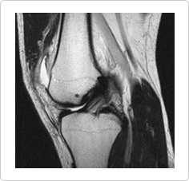

The anterior cruciate ligament is often damaged when stepping and changing direction with the feet. It is the first possibility when the kneestwist backwardsduring landing on the groundafter jumping. After hearing a snap, the individual goesthroughfromsevere pain to thechronic phase including continuous instability, powerlessness of the knees andrepeated swelling.